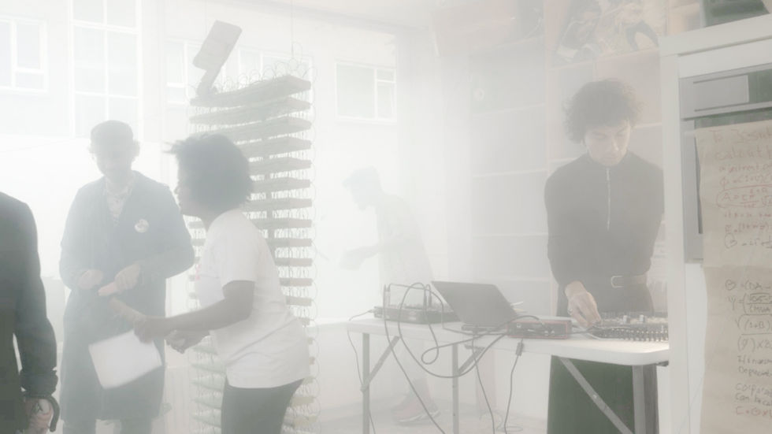
carnisse in flux
"Carnisse in Flux" by Omid Kheirabadi was a performance-based research project at "an other world" project space in Rotterdam Zuid, culminating in an immersive participatory Happening event. Over two months, Kheirabadi, with the help of Rotterdam-based Shardenia Felicia, led five performance sessions with local participants, exploring themes of displacement and gentrification. The final Happening, held during the finissage of the "What We Build On" group exhibition, transformed visitors into active participants, blurring the lines between audience and performer.
The project responded to the looming eviction of "an other world" due to planned demolition, mirroring the broader changes in Rotterdam Zuid. The event featured improvised live music by Robin Becker, created from over 25 field recordings from the five workshops held in the space. This Happening, which ironically marked the final event at "an other world," embodied the essence of collective resistance and the ongoing flux in Rotterdam Zuid through embodied research and shared creative expression.
As Kheirabadi's largest collaborative project to date, it involved six participants, three performers, and a musician. The event not only synthesized Omid's previous work and research on the theme of "rehearsals of resistance" but also opened new avenues for his ongoing exploration and artistic development.
carnisse in flux REVISITEDVideo Installation and Ongoing Performance · Prospects 2025, ART Rotterdam
Carnisse in Flux at Prospects 2025 was an immersive installation that unfolded in real-time, transforming over the course of the exhibition. Originally born from Omid Kheirabadi's project at "an other world" in Rotterdam, the installation invited visitors to engage directly with the space, much like the audience in the original Happening. The walls of the installation, which began empty, gradually filled with notes, drawings, and expressions, as visitors added their voices to the ongoing conversation about gentrification and displacement.
The installation came to life with performances by Omid Kheirabadi, Shardenia Felicia, Kivanc, Ariela Bergman, Roberto Barbato, and Qiyun Zheng, who performed in dynamic duos each day. Every visit to the space was a new experience, as the performers improvised and interacted with the space and audience, making each moment unique. Sound by Robin Becker further immersed visitors in the atmosphere, with his compositions drawing from field recordings made during the earlier sessions. This constantly evolving environment invited the audience to contribute, reflect, and witness the collective creation of something alive and ever-changing.
Happening photography: Jake Caleb.
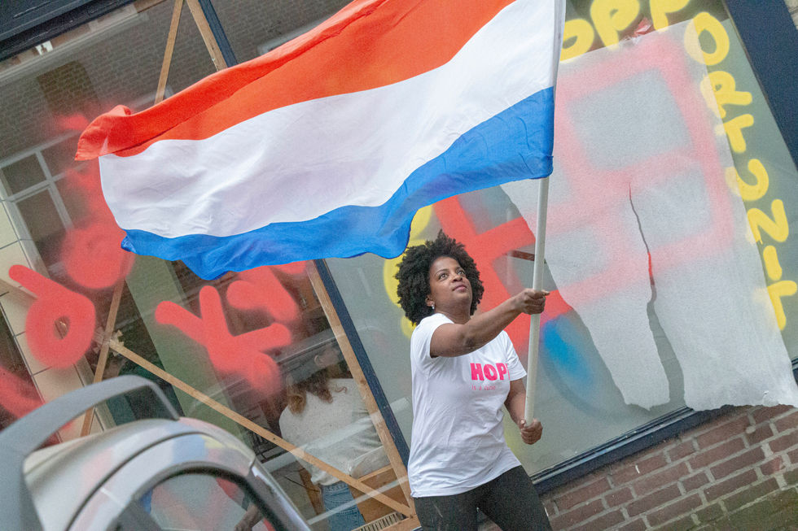
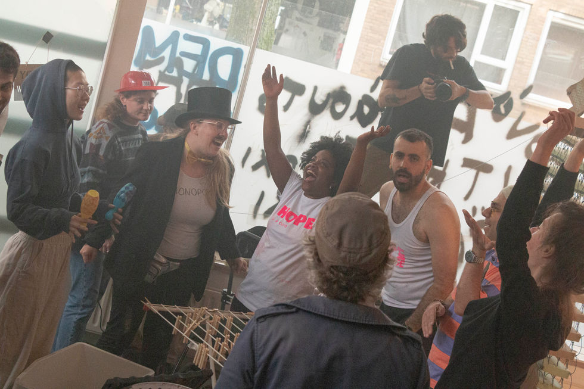
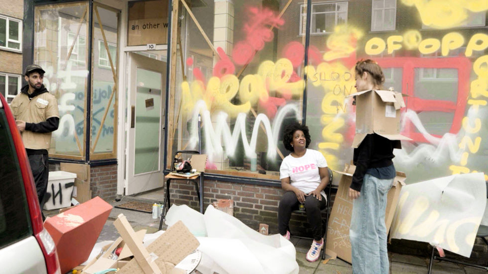
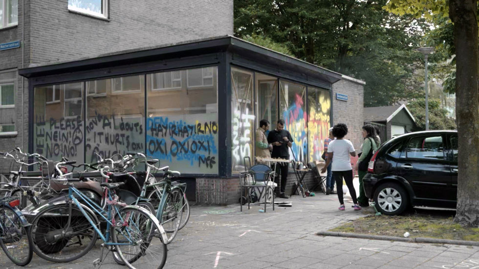
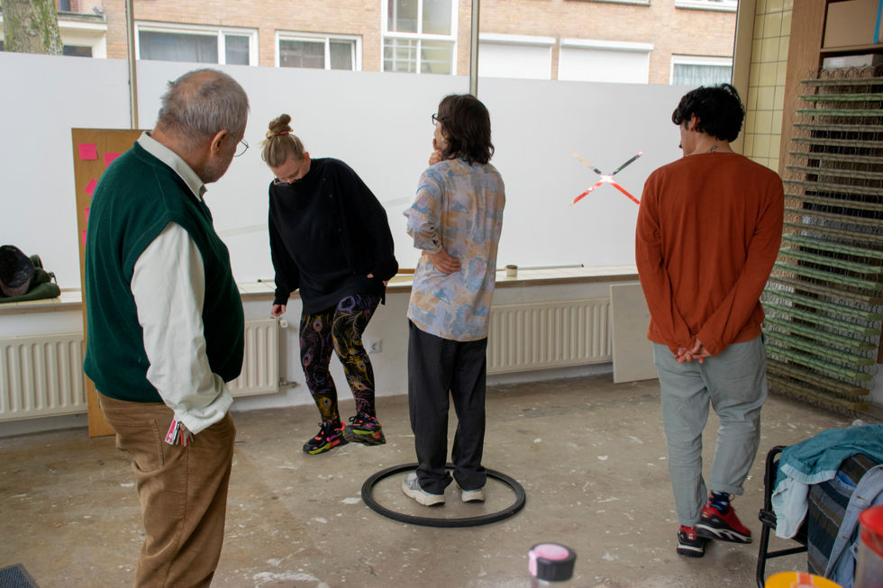
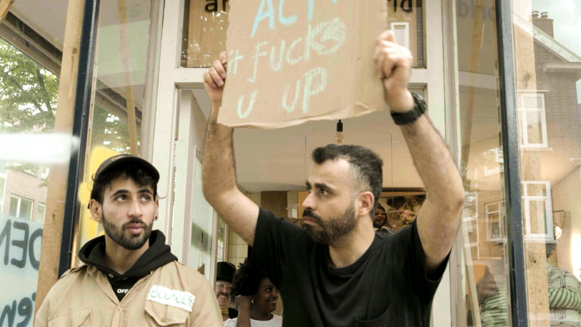
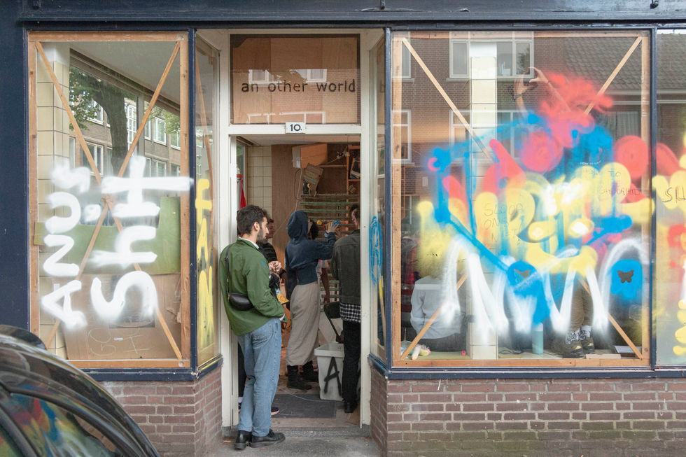
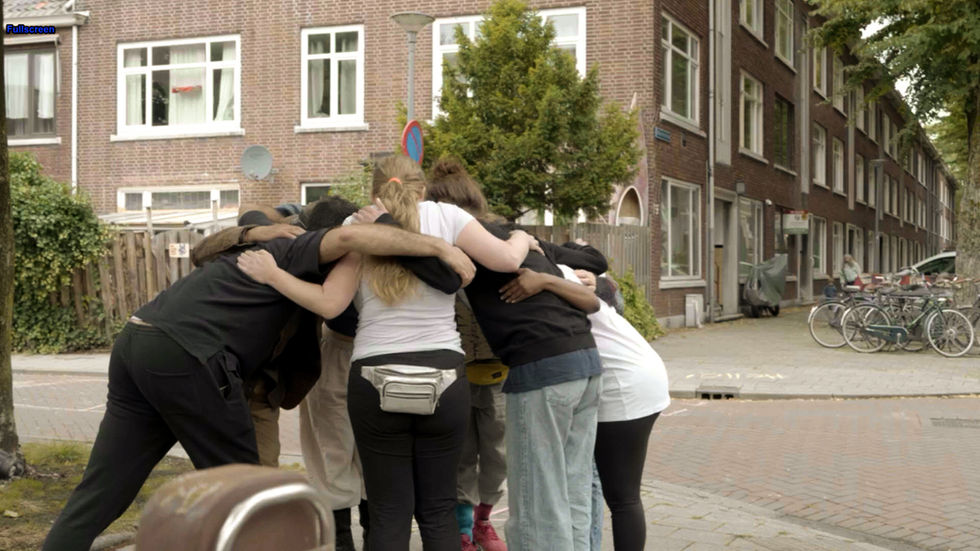
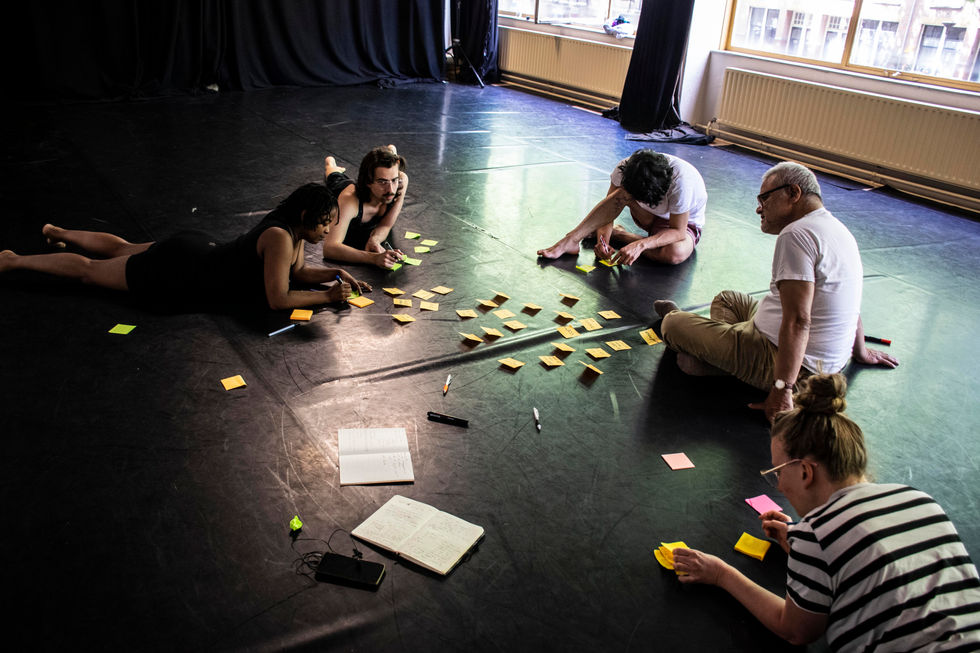
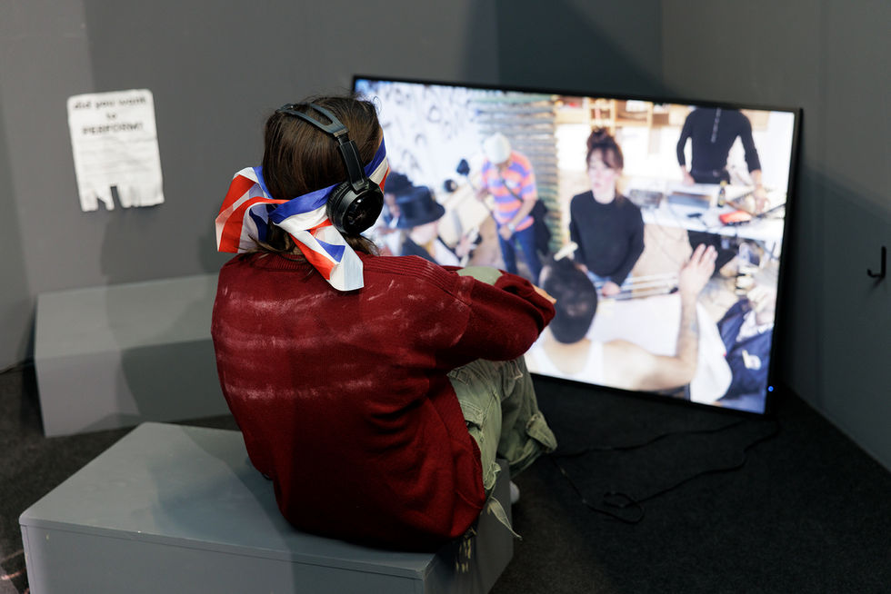
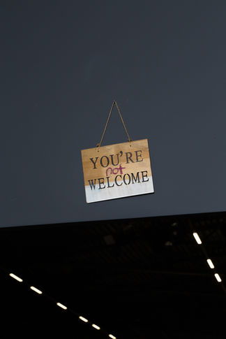
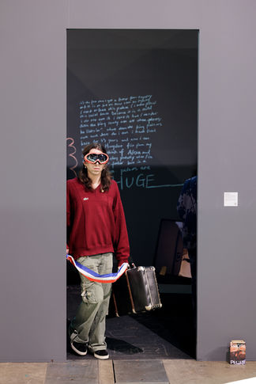
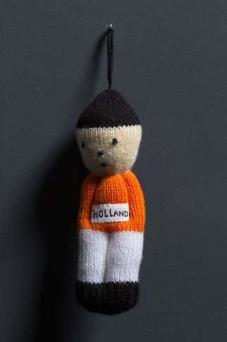
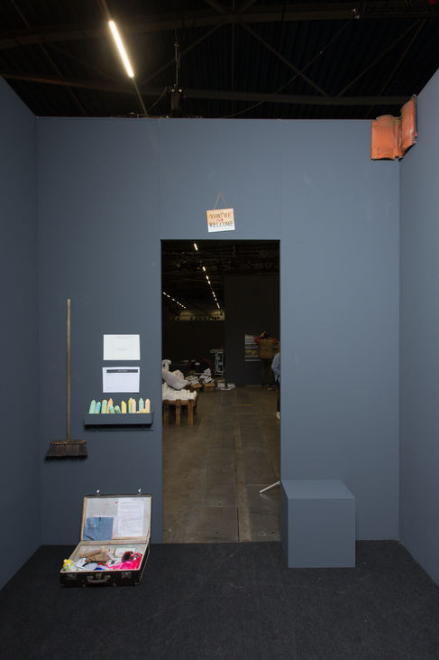
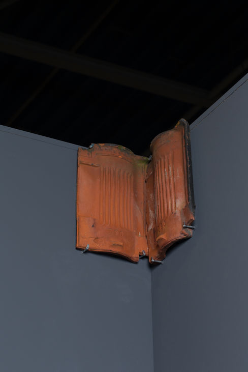
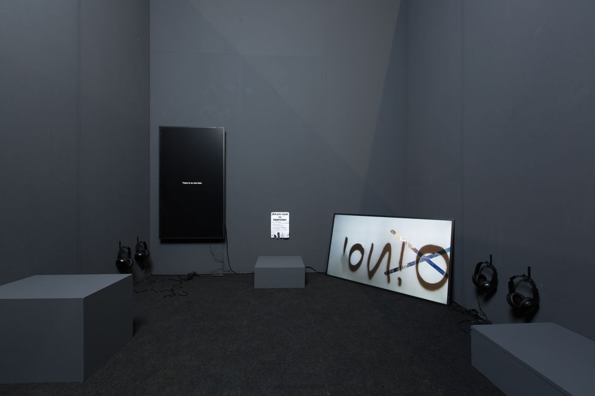
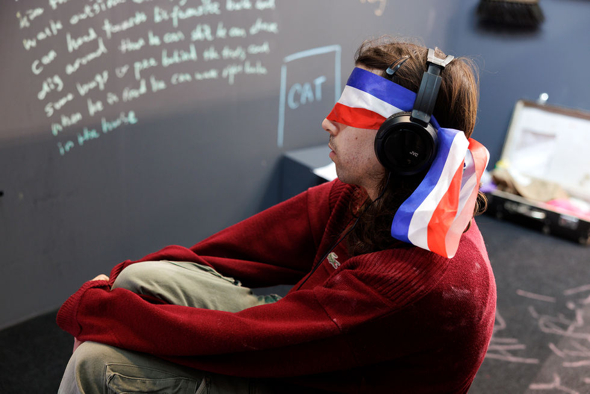
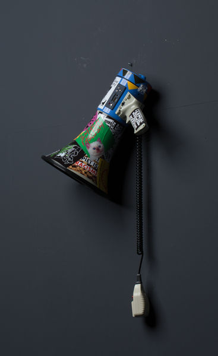